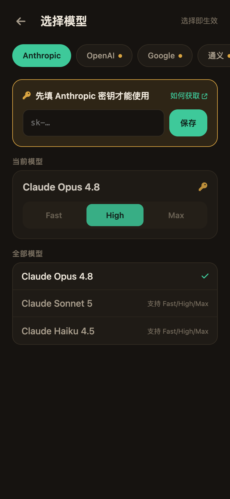

一步一步，跑起你自己的解题工具
不需要任何编程经验。这个向导会按你的电脑系统给出可以直接复制的命令，每一步都告诉你「应该看到什么」，卡住了就点开排错提示。
先选择你电脑的系统
给电脑装上 Python
Snap-Solver 是用 Python 写的，装一次就好。已经装过的话，直接跑下面的验证命令。
- 打开 python.org/downloads，点黄色的 Download Python 3.x 按钮；
- 双击安装包，第一屏务必勾选「Add Python to PATH」，然后一路下一步；
- 装完后：按
Win + S搜索cmd，回车打开命令行，粘贴验证：
python --version- 打开 python.org/downloads，下载 macOS 安装包（
.pkg）； - 双击按提示安装；
- 按
Command + 空格搜索Terminal（终端），回车打开，粘贴验证：
python3 --version- 按
Ctrl + Alt + T打开终端； - 安装 Python 及配套工具：
sudo apt update && sudo apt install python3 python3-venv python3-pip -y
然后验证：
python3 --versionPython 3.11.7。看到它就说明这一步成功了。报错「python 不是内部或外部命令 / command not found」？
- Windows：关掉命令行窗口重新打开再试；还不行就试
py --version；仍不行说明安装时没勾 PATH，重装一次并勾选； - macOS / Linux：确认用的是
python3而不是python。
把 Snap-Solver 下载到电脑上
最省事的方式是下载压缩包，不需要装任何额外工具。
方式一：下载压缩包（推荐新手）
- 打开 项目主页，点绿色 Code 按钮 → Download ZIP；
- 解压到一个好找的位置（比如「D 盘」或「桌面」「下载」文件夹主目录），把文件夹重命名为
Snap-Solver。
方式二：Git 克隆（装过 Git 的话）
git clone https://github.com/Zippland/Snap-Solver.gitSnap-Solver 文件夹，里面有 app.py、requirements.txt 等文件。记住这个文件夹的位置，下一步要用。进入项目文件夹，装好依赖
下面几条命令依次执行：先进入项目文件夹，再创建一个独立的运行环境，最后安装依赖。逐条复制、粘贴、回车即可。
1️⃣ 进入项目文件夹（把路径换成你实际解压的位置）：
cd /d D:\Snap-Solver2️⃣ 创建并激活运行环境：
python -m venv .venv
.\.venv\Scripts\Activate3️⃣ 安装依赖（1~5 分钟）：
pip install -r requirements.txt1️⃣ 进入项目文件夹（假设解压在「下载」里）：
cd ~/Downloads/Snap-Solver2️⃣ 创建并激活运行环境：
python3 -m venv .venv source .venv/bin/activate
3️⃣ 安装依赖（1~5 分钟）：
pip install -r requirements.txt1️⃣ 进入项目文件夹：
cd ~/Snap-Solver2️⃣ 创建并激活运行环境：
python3 -m venv .venv source .venv/bin/activate
3️⃣ 安装依赖（1~5 分钟）：
pip install -r requirements.txt(.venv) 前缀；安装结束时出现 Successfully installed ...，没有红色报错。安装很慢或超时？
用国内镜像源重新装：
pip install -i https://pypi.tuna.tsinghua.edu.cn/simple -r requirements.txt提示「无法加载文件 …Activate.ps1」（Windows PowerShell）？
PowerShell 默认禁止运行脚本。执行下面这条放开限制后，重新激活：
Set-ExecutionPolicy -Scope CurrentUser RemoteSigned或者改用「命令提示符 (cmd)」窗口，激活命令是 .venv\Scripts\activate.bat。
启动！
还是在刚才那个命令行窗口里（确认开头有 (.venv)），执行：
python app.pyRunning on http://192.168.1.8:5000 的地址——记下这个地址，下一步手机要用。这个窗口别关，关了服务就停了。提示端口被占用 / 地址显示 5001？
正常现象：5000 端口被其他程序占用时，会自动改用 5001。以终端实际打印的地址为准。
弹出防火墙提示？
点「允许访问」。不允许的话手机会连不上电脑。
用手机连上你的电脑
关键就一条：手机和电脑连着同一个 Wi-Fi。然后在手机浏览器里输入上一步记下的地址。
· · · · · ·
- 手机连上和电脑相同的 Wi-Fi；
- 打开手机浏览器（Safari / Chrome 都行），在地址栏输入终端里的地址，例如
192.168.1.8:5000； - 第一次打开会有一段工作机制说明，点「知道了，去选模型」。

手机打不开这个地址？
- 再确认一遍手机和电脑连的是同一个 Wi-Fi（不是手机流量、不是隔壁路由器）；
- 电脑开着 VPN 的话先关掉试试——部分 VPN 会隔离局域网；
- 先在电脑自己的浏览器里开
http://127.0.0.1:5000，能开说明服务正常，问题出在网络； - 地址每次启动可能变化，以终端最新打印的为准。
填一把 API 密钥，选一个模型
Snap-Solver 自带密钥（BYO-Key）：你去模型厂商那里申请一把 Key，填进来就能用。密钥只保存在你电脑本地。
还没有密钥？先去申请一把
六选一即可。国内网络推荐下面标绿的三家，不用代理直接连：
拿到密钥后，在手机上填
- 在模型选择页，点顶部你申请的那家厂商的标签（带小黄点 = 还没配密钥）；
- 页面顶部会出现黄色的密钥填写卡，粘贴密钥、点「保存」；
- 在「全部模型」里点选一个模型——选择即生效，没有确认按钮。

用 Claude / GPT / Gemini 连不上？
国际厂商在国内网络需要代理：回到首页 → 右上角齿轮 → 模型接入 → 网络，打开「启用代理」，填你代理软件的本地端口（常见 127.0.0.1 : 7890）。改完立即生效，不用重启。
解出你的第一道题
电脑屏幕上随便打开一道题（网页、PDF、课件都行），然后整个流程都在手机上完成：


- 手机点大圆钮 「截屏解题」——电脑自动截全屏回传；
- 双指缩放、拖动角柄框住题目，点「发送解题」；
- 等答案流出来：思考小字会自动收起，正文带公式和代码渲染；
- 没看懂就在底部继续追问；换题直接返回再截一张。
截出来是黑屏？
macOS：系统设置 → 隐私与安全性 → 屏幕录制，勾选你的终端应用，然后 Ctrl + C 停掉服务重新启动。Windows 一般无需授权。
模型报 401 / 403 错误？
密钥无效或余额不足：检查密钥有没有复制完整（别带空格）、平台账户是否有额度。错误页上点「检查密钥」可直接回到填写处。
搞定！以后每次用只要两步
电脑上双击启动（激活环境 + python app.py），手机打开地址就能用。
下面这些进阶玩法等着你：